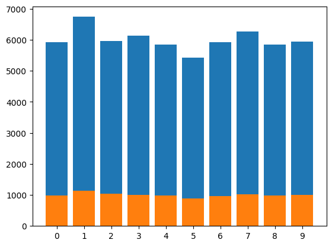
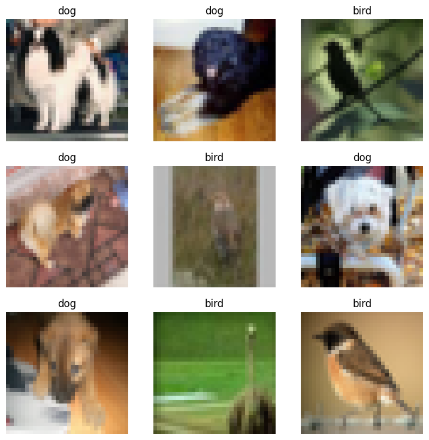

from fastai_datasets.all import *fastai-datasets
Leveraging fastai to easily load, construct, and handle datasets
Docs
See https://irad-zehavi.github.io/fastai-datasets/
Install
pip install fastai_datasetsHow to use
As an nbdev library, fatai_datasets supports import * (without importing unwanted symbols):
Here are a few usage examles:
Easily load a dataset
mnist = MNIST()
mnist.dls().show_batch()
Show the class distribution
mnist.plot_class_distribution()
Sample a subset
Whole datasets:
mnist[(#60000) [(PILImageBW mode=L size=28x28, TensorCategory(7)),(PILImageBW mode=L size=28x28, TensorCategory(7)),(PILImageBW mode=L size=28x28, TensorCategory(7)),(PILImageBW mode=L size=28x28, TensorCategory(7)),(PILImageBW mode=L size=28x28, TensorCategory(7)),(PILImageBW mode=L size=28x28, TensorCategory(7)),(PILImageBW mode=L size=28x28, TensorCategory(7)),(PILImageBW mode=L size=28x28, TensorCategory(7)),(PILImageBW mode=L size=28x28, TensorCategory(7)),(PILImageBW mode=L size=28x28, TensorCategory(7))...]
(#10000) [(PILImageBW mode=L size=28x28, TensorCategory(7)),(PILImageBW mode=L size=28x28, TensorCategory(7)),(PILImageBW mode=L size=28x28, TensorCategory(7)),(PILImageBW mode=L size=28x28, TensorCategory(7)),(PILImageBW mode=L size=28x28, TensorCategory(7)),(PILImageBW mode=L size=28x28, TensorCategory(7)),(PILImageBW mode=L size=28x28, TensorCategory(7)),(PILImageBW mode=L size=28x28, TensorCategory(7)),(PILImageBW mode=L size=28x28, TensorCategory(7)),(PILImageBW mode=L size=28x28, TensorCategory(7))...]]Subset:
mnist.random_sub_dsets(1000)[(#861) [(PILImageBW mode=L size=28x28, TensorCategory(3)),(PILImageBW mode=L size=28x28, TensorCategory(6)),(PILImageBW mode=L size=28x28, TensorCategory(7)),(PILImageBW mode=L size=28x28, TensorCategory(3)),(PILImageBW mode=L size=28x28, TensorCategory(3)),(PILImageBW mode=L size=28x28, TensorCategory(3)),(PILImageBW mode=L size=28x28, TensorCategory(4)),(PILImageBW mode=L size=28x28, TensorCategory(1)),(PILImageBW mode=L size=28x28, TensorCategory(5)),(PILImageBW mode=L size=28x28, TensorCategory(1))...]
(#139) [(PILImageBW mode=L size=28x28, TensorCategory(0)),(PILImageBW mode=L size=28x28, TensorCategory(0)),(PILImageBW mode=L size=28x28, TensorCategory(1)),(PILImageBW mode=L size=28x28, TensorCategory(2)),(PILImageBW mode=L size=28x28, TensorCategory(8)),(PILImageBW mode=L size=28x28, TensorCategory(4)),(PILImageBW mode=L size=28x28, TensorCategory(2)),(PILImageBW mode=L size=28x28, TensorCategory(8)),(PILImageBW mode=L size=28x28, TensorCategory(1)),(PILImageBW mode=L size=28x28, TensorCategory(9))...]]Construct a subset based on classes
cifar10 = CIFAR10()
dig_frog_bird = cifar10.by_target['dog'] + cifar10.by_target['frog'] + cifar10.by_target['bird']
dig_frog_bird.dls().show_batch()
Construct a dataset of similarity pairs
Pairs(cifar10, .01).dls().show_batch()